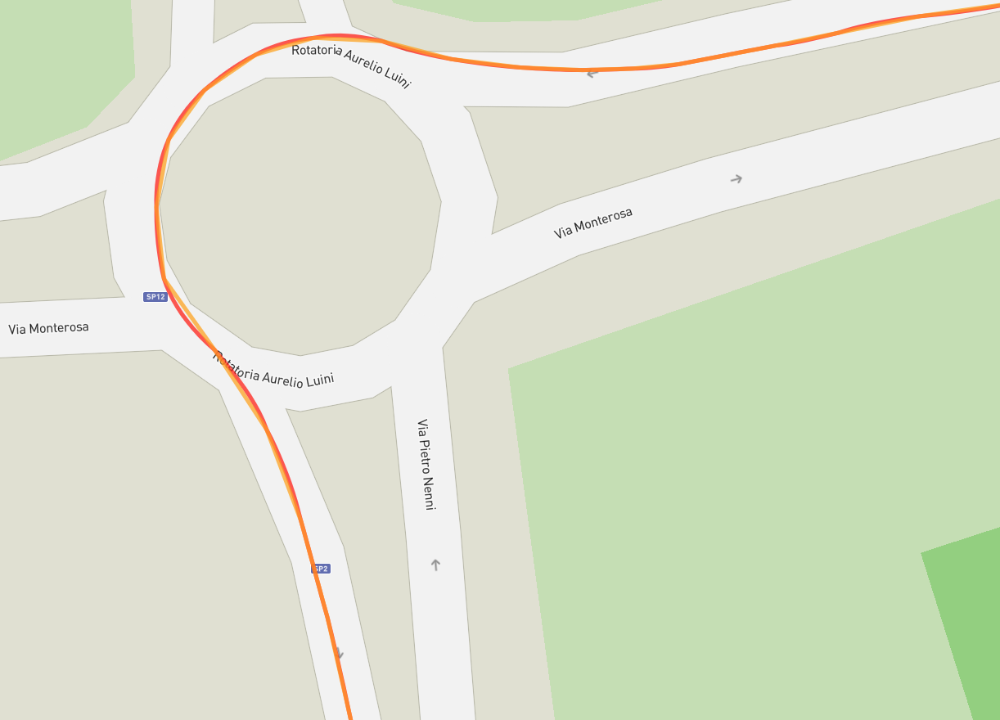
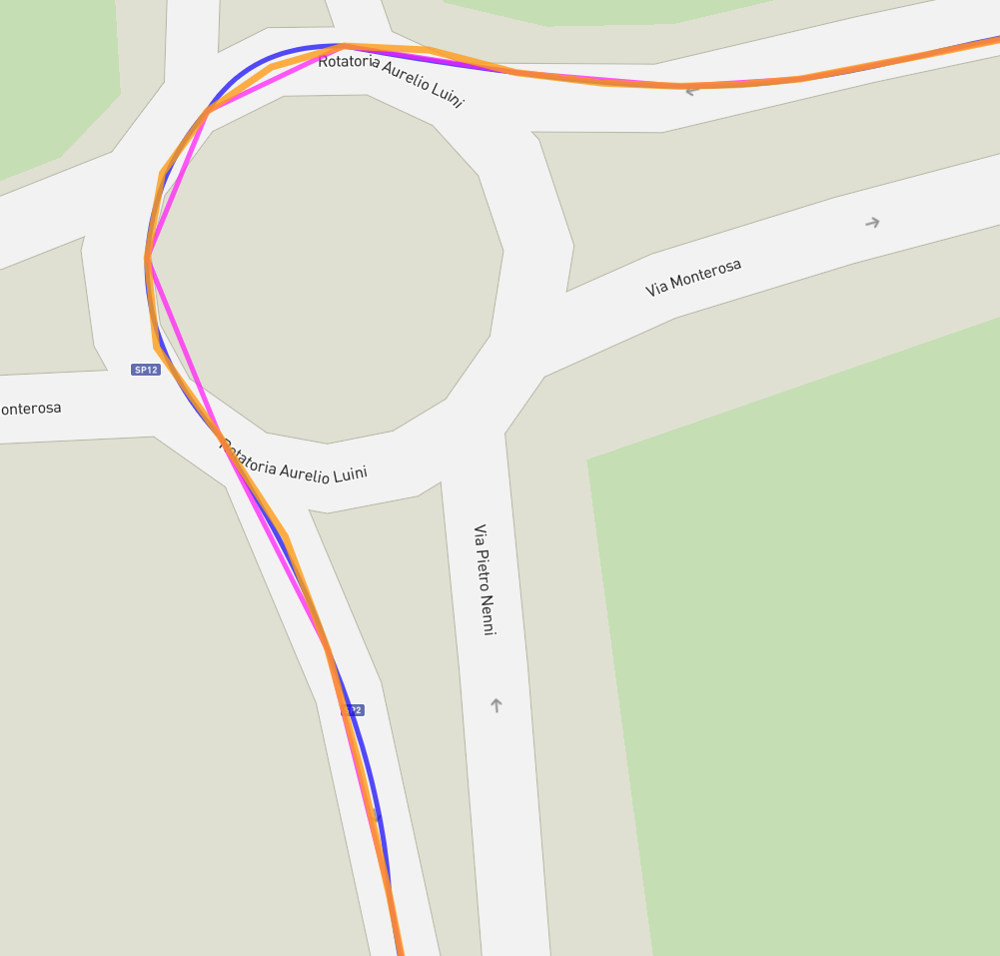
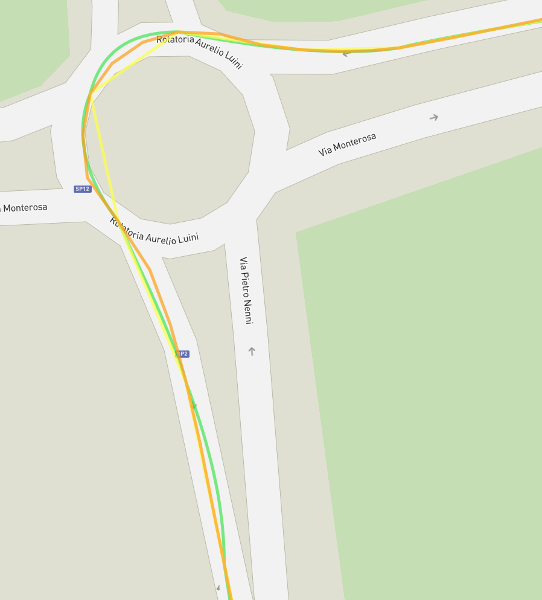
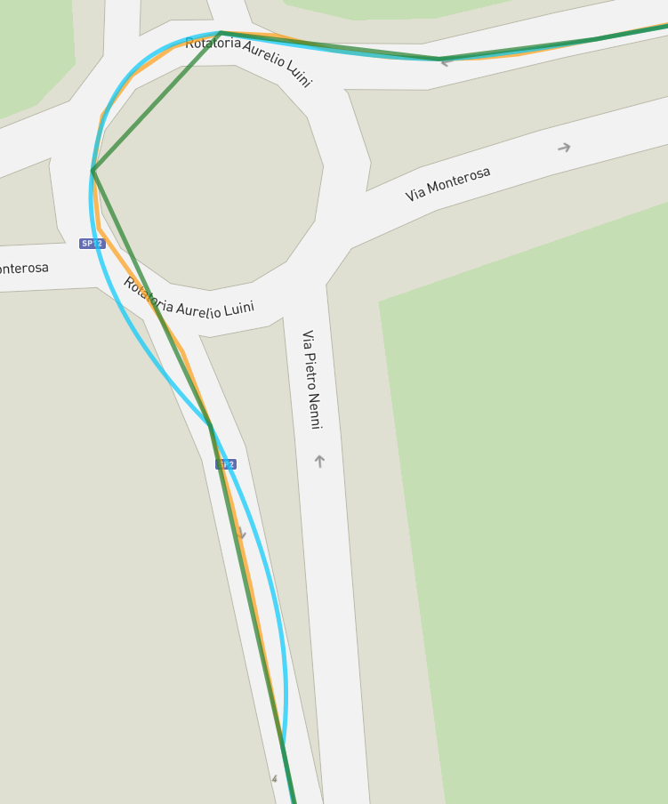

Cubic Spline Interpolation for Trajectories
Overview
The cubic spline interpolation in the Step Adapter module provides a sophisticated solution for smoothing
sparse GPS/GNSS trajectory data into continuous, time-aligned position sequences. This implementation
uses SciPy’s CubicSpline class to perform smooth spatial interpolation across three dimensions:
latitude, longitude, and altitude.
Mathematical Foundation
Cubic Spline Theory
A cubic spline is a piecewise polynomial function that interpolates a set of data points with continuous first and second derivatives. For a set of data points \((x_0, y_0), (x_1, y_1), ..., (x_n, y_n)\), the cubic spline \(S(x)\) consists of cubic polynomials \(S_i(x)\) for each interval \([x_i, x_{i+1}]\):
where the coefficients \(a_i, b_i, c_i, d_i\) are determined by the constraints:
Interpolation constraint: \(S_i(x_i) = y_i\) and \(S_i(x_{i+1}) = y_{i+1}\)
Continuity constraint: \(S_i(x_{i+1}) = S_{i+1}(x_{i+1})\)
First derivative continuity: \(S'_i(x_{i+1}) = S'_{i+1}(x_{i+1})\)
Second derivative continuity: \(S''_i(x_{i+1}) = S''_{i+1}(x_{i+1})\)
Multi-dimensional Interpolation
Latitude, longitude and altitude share the same abscissa \(t\) (time in milliseconds since epoch), so they are interpolated by one vector-valued cubic spline: SciPy solves a single tridiagonal system for all the columns instead of building independent splines.
Every point has an altitude: one spline over (latitude, longitude, altitude).
Some points lack it: one spline over (latitude, longitude); the altitude is interpolated by a separate spline over the trailing run of consecutive points with altitude ending at the last point (the new CAM position, or the last CPM point), only when that run is at least
minActorHistoryAltitudeTrailingPointPercentpercent of the points, and never shorter than 4 points (the smallest run giving a real cubic: 2 points give a line, 3 a parabola). Otherwise the interpolated positions have no altitude; withextrapolate=Falsethe positions before the run have none either.
Implementation Details
Core Algorithm
The spline lives in GapFiller (module gap_filler), shared by the CAM and CPM datasets.
For a CAM position, PointDataset and GapFiller.fill() follow these steps:
Data Collection: The queued positions of the actor (a deque of at most
maxActorHistoryPointNumberrecords) plus the new positionArray Preparation:
PointDatasetcopies timestamps and coordinates into NumPy buffers allocated once per actor (n + 1 entries); a missing altitude is stored as NaNTimestamps: The interpolated timestamps between the last queued position and the new one, from the period chosen by
GapFiller.optimal_period()(see Finding the Optimal Interpolation Period)Spline Creation:
GapFiller.interpolate()builds one vector-valuedCubicSpline, plus the trailing-run altitude spline when neededInterpolation: The splines evaluated at those timestamps with
extrapolate=FalseOutput Generation:
GapFiller.fill()computes distance, speed and heading of the whole chain with one batched geodesic call and builds the interpolated positions (POSITION_GNSS_ESTIMATED), followed by the received position
Code Structure
# GapFiller.interpolate: lat/lon (and altitude, when every point has one) share the same x
column_count = 3 if altitude_complete else 2
combined_y = np.empty(shape=(points_number, column_count), dtype=np.float64)
combined_y[:, 0] = latitudes
combined_y[:, 1] = np.unwrap(longitudes, period=LONGITUDE_RANGE)
if altitude_complete:
combined_y[:, 2] = altitudes_m
interpolator = CubicSpline(x=times_ms, y=combined_y)
interpolated = interpolator(x=target_times_ms, extrapolate=False)
CPM Resampling
For a CPM perceived object, GapFiller.resample() fits one spline on every point of the object
(measured position plus predicted path, in strictly increasing time order) and evaluates it only
at the output grid times without a real point: the grid of the output period spans the points
(see Finding the Optimal Interpolation Period), so a longer CPM period is interpolated and a shorter one decimated. The
measured position is kept unchanged, the real predicted points on the grid are kept with
recomputed speed and heading, and the other grid points become POSITION_PERCEIVED_ESTIMATED
positions. Points already at the output period are returned as-is.
Performance Analysis
Time Complexity
The cubic spline interpolation has the following time complexity characteristics:
- Spline Construction: O(n)
Array preparation: O(n) where n is the number of input points
SciPy CubicSpline construction: O(n) due to the tridiagonal matrix solver
Total spline creation: O(n), one vector-valued spline plus, at most, one altitude spline
- Interpolation Evaluation: O(log(n))
Binary search for spline segment: O(log(n))
Polynomial evaluation: O(1)
Per evaluation: O(log(n))
- Point Addition: O(n + k·log(n))
Coherence checks: O(1)
Queue management: O(1) (deque with
maxlen)Spline construction: O(n), only on the interpolation path
Interpolation evaluation: O(k·log(n)) where k is the number of interpolated positions
Output generation: O(k) for the batched geodesic call and the position objects
Total: O(n + k·log(n))
Space Complexity
- Memory Usage: O(n + k)
Input queue storage: O(n), at most
maxActorHistoryPointNumberrecordsInput buffers: O(n), four NumPy arrays of n + 1 entries allocated once per actor
Spline coefficients: O(n), temporary
Output: O(k) for the interpolated positions
Total: O(n + k) with bounded queues
- Memory Efficiency Features:
Bounded history: n =
maxActorHistoryPointNumber(5-30), the oldest point dropped automaticallyAutomatic cleanup of the actors without recent positions
Pre-allocated arrays reused by every interpolation
Note
The algorithm maintains constant memory usage per actor due to the bounded history, making it suitable for long-running real-time applications.
Configuration Parameters
The interpolation behavior is controlled by GapFillerConfig, built from the program
configuration (StepAdapterConfig) by PointDatasetConfig.gap_filler_config() for CAM and
by ObjectPerceivedDataset for CPM:
@dataclass(frozen=True, kw_only=True, slots=True)
class GapFillerConfig:
input_min_altitude_trailing_point_percent: int # Altitude trailing run (%)
output_nominal_period_ms: int # Target output period (ms)
output_max_period_deviation_ms: int # Timing tolerance (ms)
The CAM history is controlled by PointDatasetConfig, which also holds the three fields above:
@dataclass(frozen=True, kw_only=True, slots=True)
class PointDatasetConfig:
input_max_point_number: int # History size (points)
input_min_altitude_trailing_point_percent: int # Altitude trailing run (%)
input_max_period_ms: int # Longer gap clears the history (ms)
input_max_local_time_deviation_ms: int # Local time tolerance (ms)
output_nominal_period_ms: int # Target output period (ms)
output_max_period_deviation_ms: int # Timing tolerance (ms)
- Parameter Constraints (checked by
__post_init__, inclusive): input_max_point_number: 5-30input_max_period_ms: 1000-4000input_max_local_time_deviation_ms: 0-30000input_min_altitude_trailing_point_percent: 0-100 (GapFillerConfig)output_nominal_period_ms: 100-1000, 1000 //outputNominalSampleFrequency(GapFillerConfig)output_max_period_deviation_ms: 0-50 (GapFillerConfig)
Examples
Basic Usage Example
import logging
from step_adapter.point_dataset import PointDataset, PointDatasetConfig
# Configure interpolation parameters
config = PointDatasetConfig(
input_max_point_number=15,
input_min_altitude_trailing_point_percent=25,
input_max_period_ms=3000,
input_max_local_time_deviation_ms=10000,
output_nominal_period_ms=100, # 10 Hz output rate
output_max_period_deviation_ms=25,
)
# One dataset per actor
dataset = PointDataset(actor_par=actor_id, config=config, logger=logging.getLogger())
# Process the positions of the actor
for position_info in positions:
positions_out = dataset.add_point(new_position=position_info)
if positions_out is not None:
# Interpolated positions followed by the received one
for pos in positions_out:
print(f"Time: {pos.time}, Lat: {pos.position.latitude}, "
f"Lon: {pos.position.longitude}")
Trajectory Interpolation Visualization
The following example demonstrates trajectory interpolation with cubic splines:
Trajectory interpolation from 1 Hz to 10 Hz:
Orange: Original GPS points (1 Hz)
Red: Cubic spline interpolation (10 Hz)


Figure 1: Cubic spline interpolation 1 Hz to 10 Hz.
Trajectory interpolation from 0.5 Hz to 10 Hz:
Orange: Original GPS points (1 Hz)
Purple: Noisy GPS points (0.5 Hz)
Blue: Cubic spline interpolation (10 Hz)


Figure 2: Cubic spline interpolation 0.5 Hz to 10 Hz.
Trajectory interpolation from 0.33 Hz to 10 Hz:
Orange: Original GPS points (1 Hz)
Yellow: Noisy GPS points (0.33 Hz)
Bright Green: Cubic spline interpolation (10 Hz)


Figure 3: Cubic spline interpolation 0.33 Hz to 10 Hz.
Trajectory interpolation from 0.25 Hz to 10 Hz:
Orange: Original GPS points (1 Hz)
Green: Noisy GPS points (0.25 Hz)
Sky Blue: Cubic spline interpolation (10 Hz)


Figure 4: Cubic spline interpolation 0.25 Hz to 10 Hz.
Algorithm Advantages
Smoothness: Cubic splines provide C^2 continuity, ensuring smooth trajectories without sharp corners or discontinuities.
Global Fit: The spline coefficients come from one tridiagonal system over the whole sliding window, so a change in one data point affects every segment, with an influence decaying away from the point; the bounded window keeps this cost O(n).
Smoothness of the End Conditions: SciPy’s default not-a-knot end conditions are used; the minimum-curvature property holds only for natural end conditions, which are not used here.
Computational Efficiency: O(n) construction time and O(log n) evaluation time make it suitable for real-time applications.
Memory Efficiency: Bounded sliding window approach prevents memory growth during long-running operations.
Limitations and Considerations
Boundary Effects: Spline behavior at boundaries depends on boundary conditions (natural, clamped, or not-a-knot).
Oscillation: With noisy data or poor point distribution, cubic splines can exhibit unwanted oscillations between data points.
Temporal Gaps: Large gaps in time can cause unrealistic interpolation; for CAM a gap longer than inputMaxPeriod clears the history instead of interpolating across it, while no limit is applied to the gaps of a CPM predicted path (already a modelled trajectory).
Coordinate System: Interpolation is performed in geographic coordinates (lat/lon), which may introduce distortions for large distances due to Earth’s curvature.
Minimum Points: The interpolation runs from the second position of a trajectory: with 2 points the spline degenerates to a line, with 3 to a parabola; a real cubic needs at least 4 points (the minimum required for the separate altitude spline).